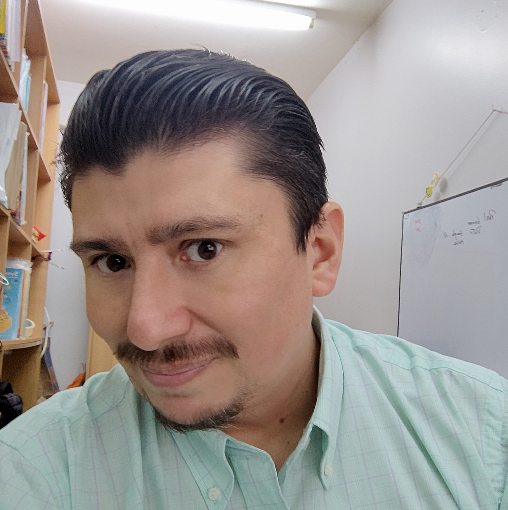

Nombre:Francisco Javier Vergara Alvarado
Cedula de identidad:13.226.266-7
Fecha de nacimiento:20 de Junio de 1977
Dirección:Pasaje Dolores #3350, Iquique
Correo electrónico: francovergara@gmail.com
Teléfono: +56973043290
Licencia de conducir: Clase B
Estado civil: Divorciado
Enseñanza Básica: 1983 a 1990, 1º a 8º Básico Academia Iquique
Enseñanza Media: 1991 a 1992, 1º y 2º Medio - Liceo Eduardo de la Barra (Valparaiso)
1993 a 1994, 3º y 4º Medio – Trinity College (Iquique)
1995 – 1996: Análisis de sistemas, DUOC sede Valparaíso (Incompleta)
1996: Operador de Sistemas, Mundo Capacitación, Viña del Mar
Microsoft Innovative Educator Expert – Microsoft
Diseño de páginas web educativas – Pontificia Universidad Católica
Formación de tutores a distancia CRA – Pontificia Universidad Católica
Construyendo BiblioCra con TIC – Universidad de Tarapacá
Ámbitos para la gestión de bibliotecas escolares CRA - Mineduc
Rol del asistente de la educación en la gestión de convivencia escolar – Academia Iquique
Nivel de Inglés Intermedio
Marzo 2005 a la fecha:
Bibliotecario e informático en Colegio Bulnes (Ex Academia Iquique), en donde he asumido los desafíos de administrar no solamente la colección CRA de nuestro establecimiento sino que además administrar las plataformas Bookcat (Software de Gestión tipo ABIES 2.0), NAPSIS, SIGE, Psicofat, evaluaciones Progresivas, pagina web del colegio y últimamente he participado en la implementación de Colegium en nuestro establecimiento.
Marzo 2004 a febrero 2005:
Me desempeño como Bibliotecario en el Instituto del mar de Iquique, en este lugar además realice la capacitación en la Universidad Católica de Chile, como tutor de coordinadores CRA, labor realizada en la ciudad de Arica en el Campus Saucache y formando a los Coordinadores CRA de esta ciudad
Marzo 2003 a enero 2004:
Creador del área Informática en Colegio Humberstone
Marzo 2000 a febrero 2003:
Informático en Colegio William Taylor, Alto Hospicio, en este lugar participo en curso de automatización de Bibliotecas CRA del programa MECE Media, teniendo mi primer contacto con las bibliotecas CRA.
Septiembre 1999 a Febrero 2000:
Técnico informático ZYB computación, Mall las américas, Iquique
Marzo 1997 a Agosto 1999:
Encargado de laboratorios de informática Iquique English College
Oriana Maturana Salazar, Directora Colegio Bulnes, Iquique
Samuel Valdés Gutiérrez, Jefe de Finanzas Instituto del mar, Iquique
Berta Ehrlich Araya, Coordinadora Regional Dibam Iquique
Humberto Zumarán Porra, Sostenedor Colegio Bulnes, Iquique